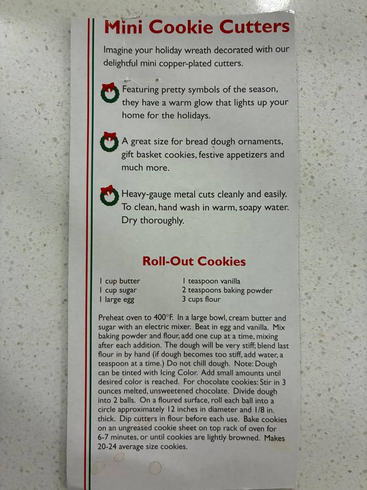

Desserts
Roll-Out Cookies
From the kitchen of Mom
Oven400°F
Bake6–7 min
Makes20–24 cookies

Mom's original card · tap to enlarge
Ingredients
Method tap a step to mark it done
- Preheat the oven to 400°F.
- In a large bowl, cream the butter and sugar with an electric mixer. Beat in the egg and vanilla.
- Mix the baking powder into the flour. Add it one cup at a time, mixing after each addition.
- The dough will be very stiff, so blend in the last of the flour by hand. If it gets too stiff, add water a teaspoon at a time. Don't chill the dough.
- Divide the dough into 2 balls. On a floured surface, roll each one into a circle about 12 inches across and ⅛ inch thick.
- Dip the cutters in flour before each cut. Place the cookies on an ungreased cookie sheet.
- Bake on the top rack for 6–7 minutes, until lightly browned.
Mom’s tips
- Colored cookies: tint the dough with icing color, adding a little at a time until you get the color you want.
- Chocolate cookies: stir 3 oz melted unsweetened chocolate into the dough.